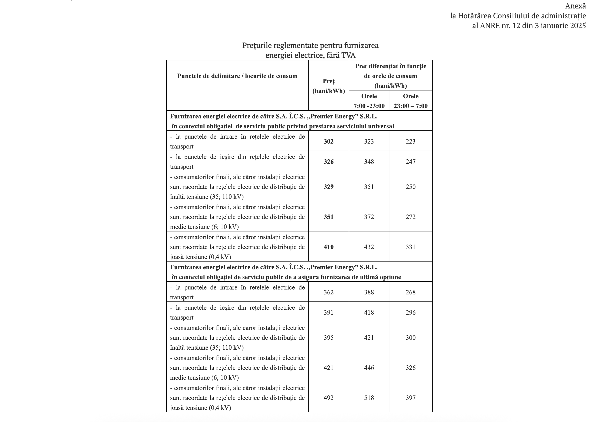

Bine ați venit în Crîngul Privighetorilor
Întovărășirea noastră, situată în apropierea satului Izbiște din raionul Criuleni, Republica Moldova, este un loc unde natura și liniștea se împletesc armonios. Înființată pentru iubitorii de grădinărit și pentru proprietarii de case de vacanță, "Crîngul Privighetorilor" vă oferă un refugiu perfect din agitația urbană.
Aici, printre cântecele privighetorilor și verdele crud al naturii, veți găsi o comunitate primitoare, dedicată unei vieți în armonie cu natura. Fie că sunteți rezident permanent sau doar în vizită, vă invităm să descoperiți frumusețea și liniștea comunității noastre.
Comunitate Unită
Suntem o comunitate care pune preț pe relațiile bune între vecini și pe sprijinul reciproc. Organizăm regulat întâlniri și evenimente pentru a ne cunoaște mai bine și pentru a discuta despre proiectele comune.
Grădinărit Sustenabil
Încurajăm practicile de grădinărit ecologic și sustenabil. Împărtășim cunoștințe, semințe și plante între membri, promovând diversitatea și sănătatea mediului înconjurător.
Infrastructură în Dezvoltare
Lucrăm constant la îmbunătățirea infrastructurii locale, asigurând accesul la utilități și amenajarea spațiilor comune pentru beneficiul tuturor membrilor comunității.
Noutăți
14 August 2025
Indicații Contoarelor pentru electricitate la data de 13.08.2025
Stimați membrii ai întovărășirii, vă prezentăm indicatii contoarelor pentru electricitate la data de 13.08.2025.
Dacă vă aflați în această listă vă indemnăm cât mai urgent să achitați consumul curent de electricitate cu 4.10 lei/KW,
ca să puteți beneficia de tariful nou de 3.59 lei/KW.
Vedeți aici Datele contoarelor pentru electricitate furnizate către IP la data de 13.08.2025 .
13 August 2025
Indicații Contoarelor pentru apa la data de 10.08.2025
Stimați membrii ai întovărășirii, vă informăm că din data de 01.09.2025 va fi ajustat tariful pentru serviciul de alimentare cu apa. Noul tarif va fi de 14 lei pentru un metru cub de apă consumată.
Vă indemnăm să achitați consumul curent de apă pâna la ajustarea respectivă a tarifului.
Vedeți aici Datele contoarelor pentru apa prezentate către IP la data de 10.08.2025.
01 August 2025
Indicații Contoarelor pentru electricitate la data de 01.08.2025
Stimați membrii ai întovărășirii, vă informăm că din 01.08.2025 a intrat in vigoare tariful de 3.59 lei/kWh, cu 51 de bani mai mic de cel precedent.
Vă indemnăm să achitați și prezentați datele de la contoarele pînă la 03 august 2025. Pentru consumul indicat pînă la 01 august 2025 se va percepe 4,10 lei/KW. Dacă nu se vor indica indicii pînă 03.08.2025 costul consumului estimativ va fi contabilizati ca datorii.
Cu cât mai repede veți prezenta datele contoarelor, cu atât mai repede veți beneficia de tariful nou.
Vedeți aici Datele contoarelor pentru electricitate furnizate către IP la data de 01.08.2025 .
11 Iunie 2025
Modelul nou de evaluare a loturilor pomicole în scopurile impozitării
Stimați membrii ai întovărășirii, vă informăm că a intrat în vigoare ordinul Nr. 49 din 26-05-2025 privind modelul de evaluare a loturilor pomicole în scopurile impozitării, ceia ce va duce la modificare a mărimii impozitelor pe imobil din următorul an.
31 Mai 2025
Tarifele în vigoare la energie electrică
Stimați membrii întovărășirii vă informăm că tarifele pentru energia electrică în vigoare sunt publicate în Hotărârea nr.12 din 03.01.2025 a agenției naționale de reglementare în energetică (ANRE).
O puteți vizualiza aici - Hotărârea nr.12 din 03.01.2025

12 Aprilie 2025
Publicarea listei datornicilor a cotizațiilor (per lot) pentru anul 2024
Stimați membrii întovărășirii vă prezentăm lista datornicilor a cotizațiilor (per lot) pentru anul 2024.
Dacă vă regăsiți în această listă, vă rugăm să achitați cotizația cât mai curând posibil.
Dacă deja ați achitat cotizația pentru anul 2024 și sunteți incă an acestă listă, vă rugăm să contactați administrația pe adresa de email administratiacringulprivighetorilor.vip sau să vă apropiați în încinta întovărăşirii în orele de primire pentru a verifica înregistrările noastre.
Lista datornicilor a cotizațiilor (per lot) pentru anul 2024
24 Martie 2025
Model procură pentru participarea la adunarea generală din 30 Martie 2025.
Stimați membri,
Vă prezentăm un model de procură pentru participarea la adunarea generală a membrilor întovărășirii din 30 Martie 2025.
Procura este necesară pentru membrii care nu pot participa personal la adunare și doresc să fie reprezentați de un alt membru sau un membru de familie.
19 Martie 2025
Deschiderea înregistrării prealabile pentru adunarea generală din 30 Martie 2025
Stimați membri,
Vă invităm să vă înregistrați pentru participarea la adunarea generală din 30 Martie 2025.
📅 Data: 30 Martie 2025
📍 Locația: Pretura Sectorului Râșcani, str. Kiev 3, Chișinău.
🕒 Ora: 12:00
Apasați aici pentru a începe înregistrarea
15 Martie 2025
Invitație la curățenia generală a teritoriului comun al IP "Crîngul Privighetorilor"
Stimați membrii ai IP Crîngul Privighetorilor. Administrația IP vă invită pe data de 22 martie, la orele 10:00 să participați la curățenie generală a teritoriului comun al IP. Administrația va pune la dispoziție în acest scop tractorul cu remorcă unde se vor stoca gunoiul adunat. Să întâlnim sezonul anului 2025 și Paștele care vine cu o întovărășire curată!
26 Februarie 2025
Pregătiri pentru petrecerea adunării generale a membrilor întovărăşirii din anul 2025.
Stimați membri ai întovărășirii, direcția de conducere a IP a elaborat și propune spre consultare publica cu membrii IP bugetul (deviz venituri - cheltueli) și acte normative pentru activitatea administrației IP în anul 2025. Se propun următoarele:
25 Februarie 2025
Lansarea paginii web oficiale a IP "Crîngul Privighetorilor", s. Izbiște, extravilan, r. Criuleni
Suntem bucuroși să anunțăm lansarea noului nostru website! 🎉 Acum puteți descoperi mai ușor informații, resurse și noutăți despre comunitatea noastră